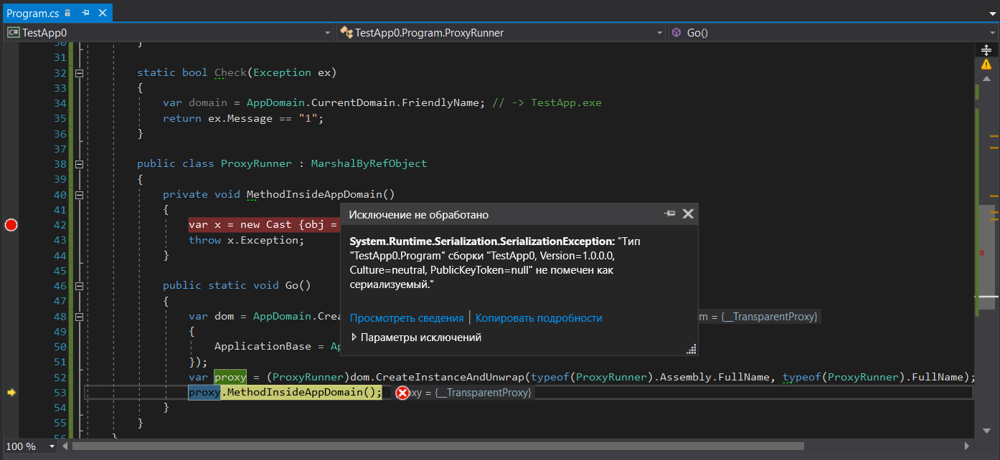

Исключения
В нашем разговоре о потоке исполнения команд различными подсистемами пришло время поговорить про исключения или, скорее, исключительные ситуации. И прежде чем продолжить стоит совсем немного остановиться именно на самом определении. Что такое исключительная ситуация?
Исключительной называют такую ситуацию, которая делает исполнение дальнейшего или текущего кода абсолютно не корректным. Не таким как задумывалось, проектировалось. Переводит состояние приложения в целом или же его отдельной части (например, объекта) в состояние нарушенной целостности. Т.е. что-то экстраординарное, исключительное.
Почему же это так важно — определить терминологию? Работа с терминологией очень важна, т.к. она держит нас в рамках. Если не следовать терминологии можно уйти далеко от созданного проектировщиками концепта и получить множество неоднозначных ситуаций. А чтобы закрепить понимание вопроса давайте обратимся к примерам:
struct Number { public static Number Parse(string source) { // ... if(!parsed) { throw new ParsingException(); } // ... } public static bool TryParse(string source, out Number result) { // .. return parsed; } }
Этот пример кажется немного странным: и это не просто так. Для того чтобы показать исключительность проблем, возникающих в данном коде я сделал его несколько утрированным. Для начала посмотрим на метод Parse. Почему он должен выбрасывать исключение?
- Он принимает в качестве параметра строку, а в качестве результата — некоторое число, которое является значимым типом. По этому числу мы никак не можем определить, является ли оно результатом корректных вычислений или же нет: оно просто есть. Другими словами, в интерфейсе метода отсутствует возможность сообщить о проблеме;
- С другой стороны метод, принимая строку подразумевает что её для него корректно подготовили: там нет лишних символов и строка содержит некоторое число. Если это не так, то возникает проблема предусловий к методу: тот код, который вызвал наш метод отдал не корректные данные.
Получается, что для данного метода ситуация получения строки с не корректными данными является исключительной: метод не может вернуть корректного значения, но и вернуть абы что он не может. А потому единственный выход — бросить исключение.
Второй вариант метода обладает каналом сигнализации о наличии проблем с входными данными: возвращаемое значение тут boolean и является признаком успешности выполнения метода. Сигнализировать о каких-либо проблемах при помощи механизма исключений данный метод не имеет ни малейшего повода: все виды проблем легко уместятся в возвращаемое значение false.
Общая картина
Обработка исключительных ситуаций может показаться вопросом достаточно элементарным: ведь все что нам необходимо сделать — это установить try-catch блоки и ждать соответствующего события. Однако вопрос кажется элементарным только благодаря огромной работе, проделанной командами CLR и CoreCLR чтобы унифицировать все ошибки, которые лезут в CLR со всех щелей — из самых разных источников. Чтобы иметь представление, о чем мы будем далее вести беседу, давайте взглянем на диаграмму:

На этой схеме мы видим, что в большом .NET Framework существует по сути два мира: все, что относится к CLR и все, что находится за ней: все возможные ошибки, возникающие в Windows и прочем unsafe мире:
- Structured Exception Handling (SEH) — структурированная обработка исключений — стандарт платформы Windows для обработки исключений. Во время вызовов unsafe методов и последующем выбросе исключений происходит конвертация исключений unsafe <-> CLR в обе стороны: из unsafe в CLR и обратно, т.к. CLR может вызвать unsafe метод, а тот в свою очередь — CLR метод.
- Vectored Exception Handling (VEH) — по своей сути является корнем SEH, позволяя вставлять свои обработчики в точку выброса исключения. Используется в частности для установки
FirstChanceException. - COM+ исключения — когда источником проблемы является некоторый COM компонент, то прослойка между COM и .NET методом должна сконвертировать COM ошибку в исключение .NET
- И, наконец, обёртки для HRESULT. Введены для конвертации модели WinAPI (код ошибки — в возвращаемом значении, а возвращаемые значения — через параметры метода) в модель исключений: для .NET стардартом является именно исключительная ситуация
С другой стороны, поверх CLI располагаются языки программирования, каждый из которых частично или же полностью — предлагает функционал по обработке исключений конечному пользователю языка. Так, например, языки VB.NET и F# до недавнего времени обладали более богатым функционалом по части обработки исключительных ситуаций, предлагая функционал фильтров, которых не существовало в языке C#.
Коды возврата vs. исключение
Стоит отдельно отметить модель работы с ошибками в приложении через коды возврата. Эта идея — просто вернуть ошибку — очень проста и понятна. Мало того, если отталкиваться от отношения к исключениям как к оператору goto, то коды возврата становятся намного более корректной реализацией: ведь в этом случае пользователь метода видит и возможность самой ошибки, а также может сразу понять, какие ошибки возможны. Но давайте не будет гадать на кофейной гуще, что лучше и для чего, а лучше обсудим проблематику выбора академически.
Представим, что все методы обладают интерфейсом для получения ошибки. Тогда все наши методы выглядели бы как-то так:
public bool TryParseInteger(string source, out int result); public DialogBoxResult OpenDialogBox(...); public WebServiceResult IWebService.GetClientsList(...); public class DialogBoxResult : ResultBase { ... } public class WebServiceResult : ResultBase { ... }
А их использование выглядело бы как-то так:
public ShowClientsResult ShowClients(string group) { if(!TryParseInteger(group, out var clientsGroupId)) return new ShowClientsResult { Reason = ShowClientsResult.Reason.ParsingFailed }; var webResult = _service.GetClientsList(clientsGroupId); if(!webResult.Successful) { return new ShowClientsResult { Reason = ShowClientsResult.Reason.ServiceFailed, WebServiceResult = webResult }; } var dialogResult = _dialogsService.OpenDialogBox(webResult.Result); if(!dialogResult.Successful) { return new ShowClientsResult { Reason = ShowClientsResult.Reason.DialogOpeningFailed, DialogServiceResult = dialogResult }; } return ShowClientsResult.Success(); }
Возможно, вам покажется, что этот код перегружен обработкой ошибок. Однако я попрошу вас не согласиться с такой позицией: все, что здесь происходит — это эмуляция работы механизма выброса и обработки исключений.
Как любой метод может сообщить о возникшей проблеме? Посредством некоторого интерфейса сообщения об ошибки. Например, в методе TryParseInteger интерфейсом является возвращаемое значение: если все хорошо, метод вернёт true. Если все плохо, вернёт false. Однако данный способ обладает и минусом: реальное значение возвращается через out int result параметр. Минус подхода с одной стороны состоит в том, что возвращаемое значение чисто логически и по восприятию является более «возвращаемым значением» чем out параметр. А с другой — сам факт ошибки нам не всегда интересен. Ведь если строка для парсинга пришла из сервиса, который сгенерировал эту строку, значит проверять на ошибки парсинг нет необходимости: там всегда будет лежать правильная, пригодная для разбора строка. С другой стороны, если взять другую реализацию метода:
public int ParseInt(string source);
То возникает резонный вопрос: если парсинг всё-таки будет содержать ошибку по неизвестной нам причине, что делать методу тогда? Вернуть ноль? Будет не корректно: нуля в строке не было. Тогда становится ясно что мы имеем конфликт интересов: первый вариант многословен, а второй — не содержит канала сигнализации об ошибках. Однако, можно легко прийти к выводу, когда надо работать с кодами возвратов, а когда — с исключениями:
Код возврата необходимо внедрять тогда, кода факт ошибки является нормой поведения. Например, в алгоритме парсинга текста ошибки в тексте являются нормой поведения, тогда как в алгоритме работы с разобранной строкой получение от парсера ошибки может являться критичным или, другими словами, чем-то исключительным.
Блоки Try-Catch-Finally коротко
Блок try создаёт секцию, от которой программист ожидает возникновения критических ситуаций, которые с точки зрения внешнего кода являются нормой поведения. Т.е. другими словами, если мы работаем с некоторым кодом, который в рамках своих правил считает внутреннее состояние более не консистентным и в связи с этим выбрасывает исключение, то внешняя система, которая обладает более широким видением той же ситуации возникшее исключение может перехватить блоком catch тем самым нормализовав исполнение кода приложения. А потому, перехватом исключений вы легализуете их наличие на данном участке кода. Это, на мой взгляд, очень важная мысль, которая обосновывает запрет на перехват всех типов исключений try-catch(Exception ex){ ... } на всякий случай.
Это вовсе не означает, что перехватывать исключения идеологически плохо: я всего лишь хочу сказать о необходимости перехватывать то и только то, что вы ожидаете от конкретного участка кода и ничего больше. Например, вы не можете ожидать все типы исключений, которые наследуется от ArgumentException или же получение NullReferenceException поскольку это означает что проблема чаще всего не в вызываемом коде, а в вашем. Зато вполне корректно ожидать, что желаемый файл открыть вы не сможете. Даже если на 200% уверены, что сможете, не забудьте сделать проверку.
Третий блок — finally — также не должен нуждаться в представлении. Этот блок срабатывает для всех случаев работы блоков try-catch. Кроме некоторых достаточно редких особых ситуаций, этот блок отрабатывает всегда. Для чего введена такая гарантия исполнения? Для зачистки тех ресурсов и тех групп объектов, которые были выделены или же захвачены в блоке try и при этом являются зоной его ответственности.
Этот блок очень часто используется без блока catch, когда нам не важно, какая ошибка уронила алгоритм, но важно очистить все выделенные для этого конкретно алгоритма ресурсы. Простой пример: для алгоритма копирования файла необходимо: два открытых файла и участок памяти под кэш-буфер копирования. Память мы выделить смогли, один файл открыть смогли, а вот со вторым возникли какие-то проблемы. Чтобы запечатать все в одну «транзакцию», мы помещаем все три операции в единый try блок (как вариант реализации), с очисткой ресурсов — в finally. Пример может показаться упрощённым, но тут главное — показать суть.
Чего не хватает в языке программирования C#, так это блока fault, суть которого — срабатывать всегда, когда произошла любая ошибка. Т.е. тот же finally, только на стероидах. Если бы такое было, мы бы смогли, как классический пример делать единую точку входа в логирование исключительных ситуаций:
try { //... } fault exception { _logger.Warn(exception); }
Также, о чем хотелось бы упомянуть во вводной части — это фильтры исключительных ситуаций. Для платформы .NET это новшеством не является, однако является таковым для разработчиков на языке программирования C#: фильтрация исключительных ситуаций появилась у нас только в шестой версии языка. Фильтры призваны нормализовать ситуацию, когда есть единый тип исключения, который объединяет в себе несколько видов ошибок. И в то время как мы хотим отрабатывать на конкретный сценарий, вынуждены перехватывать всю группу и фильтровать её — уже после перехвата. Я, конечно же, имею в виду код следующего вида:
try { //... } catch (ParserException exception) { switch(exception.ErrorCode) { case ErrorCode.MissingModifier: // ... break; case ErrorCode.MissingBracket: // ... break; default: throw; } }
Так вот теперь мы можем переписать этот код нормально:
try { //... } catch (ParserException exception) when (exception.ErrorCode == ErrorCode.MissingModifier) { // ... } catch (ParserException exception) when (exception.ErrorCode == ErrorCode.MissingBracket) { // ... }
И вопрос улучшения тут вовсе не в отсутствии конструкции switch. Новая конструкция как по мне лучше по нескольким пунктам:
- фильтруя по when мы перехватываем ровно то что хотим поймать и не более того. Это правильно идеологически;
- в новом виде код стал более читаем. Просматривая взглядом, мозг более легко находит определения ошибок, т.к. изначально он их ищет не в
switch-case, а вcatch; - и менее явное, но также очень важное: предварительное сравнение идёт ДО входа в catch блок. А это значит, что работа такой конструкции для случая промаха мимо всех условий будет идти намного быстрее чем
switchс перевыбросом исключения.
Особенностью исполнения кода по уверениям многих источников является то, что код фильтрации происходит до того как произойдёт развёртка стека. Это можно наблюдать в ситуациях, когда между местом выброса исключения и местом проверки на фильтрацию нет никаких других вызовов кроме обычных:
static void Main() { try { Foo(); } catch (Exception ex) when (Check(ex)) { ; } } static void Foo() { Boo(); } static void Boo() { throw new Exception("1"); } static bool Check(Exception ex) { return ex.Message == "1"; }

Как видно на изображении трассировка стека содержит не только первый вызов Main как место отлова исключительной ситуации, но и весь стек до точки выброса исключения плюс повторный вход в Main через некоторый неуправляемый код. Можно предположить, что этот код и есть код выброса исключений, который просто находится в стадии фильтрации и выбора конечного обработчика. Однако стоит отметить что не все вызовы позволяют работать без раскрутки стека. На мой скромный взгляд, внешняя унифицированность платформы порождает излишнее к ней доверие. Например, вызов методов между доменами с точки зрения кода выглядит абсолютно прозрачно. Тем не менее, работа вызовов методов происходит совсем по другим законам. О них мы и поговорим в следующей части.
Сериализация
Давайте начнём несколько издалека и посмотрим на результаты работы следующего кода (я добавил проброс вызова через границу между доменами приложения):
class Program
{
static void Main()
{
try
{
ProxyRunner.Go();
}
catch (Exception ex) when (Check(ex))
{
;
}
}
static bool Check(Exception ex)
{
var domain = AppDomain.CurrentDomain.FriendlyName; // -> TestApp.exe
return ex.Message == "1";
}
public class ProxyRunner : MarshalByRefObject
{
private void MethodInsideAppDomain()
{
throw new Exception("1");
}
public static void Go()
{
var dom = AppDomain.CreateDomain("PseudoIsolated", null, new AppDomainSetup
{
ApplicationBase = AppDomain.CurrentDomain.BaseDirectory
});
var proxy = (ProxyRunner) dom.CreateInstanceAndUnwrap(typeof(ProxyRunner).Assembly.FullName, typeof(ProxyRunner).FullName);
proxy.MethodInsideAppDomain();
}
}
}
Если обратить внимание на размотку стека, то станет ясно, что в данном случае она происходит ещё до того, как мы попадаем в фильтр. Взглянем на скриншоты. Первый взят до того, как генерируется исключение:

А второй — после:

Изучим трассировку вызовов до и после попадания в фильтр исключений. Что же здесь происходит? Здесь мы видим, что разработчики платформы сделали некоторую с первого взгляда защиту дочернего домена. Трассировка обрезана по крайний метод в цепочке вызовов, после которого идёт переход в другой домен. Но на самом деле, как по мне так это выглядит несколько странно. Чтобы понять, почему так происходит, вспомним основное правило для типов, организующих взаимодействие между доменами. Эти типы должны наследовать MarshalByRefObject плюс — быть сериализуемыми. Однако, как бы ни был строг C#, типы исключений могут быть какими угодно. А что это значит? Это значит, что могут быть ситуации, когда исключительная ситуация внутри дочернего домена может привести к её перехвату в родительском домене. И если у объекта данных исключительной ситуации есть какие-либо опасные методы с точки зрения безопасности, они могут быть вызваны в родительском домене. Чтобы такого избежать, исключение сериализуется, проходит через границу доменов приложений и возникает вновь — с новым стеком. Давайте проверим эту стройную теорию:
[StructLayout(LayoutKind.Explicit)] class Cast { [FieldOffset(0)] public Exception Exception; [FieldOffset(0)] public object obj; } static void Main() { try { ProxyRunner.Go(); Console.ReadKey(); } catch (RuntimeWrappedException ex) when (ex.WrappedException is Program) { ; } } static bool Check(Exception ex) { var domain = AppDomain.CurrentDomain.FriendlyName; // -> TestApp.exe return ex.Message == "1"; } public class ProxyRunner : MarshalByRefObject { private void MethodInsideAppDomain() { var x = new Cast {obj = new Program()}; throw x.Exception; } public static void Go() { var dom = AppDomain.CreateDomain("PseudoIsolated", null, new AppDomainSetup { ApplicationBase = AppDomain.CurrentDomain.BaseDirectory }); var proxy = (ProxyRunner)dom.CreateInstanceAndUnwrap(typeof(ProxyRunner).Assembly.FullName, typeof(ProxyRunner).FullName); proxy.MethodInsideAppDomain(); } }
В данном примере, для того чтобы выбросить исключение любого типа из C# кода (я не хочу никого мучить вставками на MSIL) был проделан трюк с приведением типа к не сопоставимому: чтобы мы бросили исключение любого типа, а транслятор C# думал бы, что мы используем тип Exception. Мы создаём экземпляр типа Program — гарантированно не сериализуемого и бросаем исключение с ним в виде полезной нагрузки. Хорошие новости заключаются в том, что вы получите обёртку над не-Exception исключениями RuntimeWrappedException, который внутри себя сохранит экземпляр нашего объекта типа Program и в C# перехватить такое исключение мы сможем. Однако есть и плохая новость, которая подтверждает наше предположение: вызов proxy.MethodInsideAppDomain(); приведёт к исключению SerializationException:

Т.е. проброс между доменами такого исключения не возможен, т.к. его нет возможности сериализовать. А это в свою очередь значит, что оборачивание вызовов методов, находящихся в других доменах фильтрами исключений все равно приведёт к развёртке стека несмотря на то что при FullTrust настройках дочернего домена сериализация казалось бы не нужна.
Стоит дополнительно обратить внимание на причину, по которой сериализация между доменами так необходима. В нашем синтетическом примере мы создаём дочерний домен, который не имеет никаких настроек. А это значит, что он работает в FullTrust. Т.е. CLR полностью доверяет его содержимому как себе и никаких дополнительных проверок делать не будет. Но как только вы выставите хоть одну настройку безопасности, полная доверенность пропадёт и CLR начнёт контролировать все что происходит внутри этого дочернего домена. Так вот когда домен полностью доверенный, сериализация по идее не нужна. Нам нет необходимости как-то защищаться, согласитесь. Но сериализация создана не только для защиты. Каждый домен грузит в себя все необходимые сборки по второму разу, создавая их копии. Тем самым создавая копии всех типов и всех таблиц виртуальных методов. Передавая объект по ссылке из домена в домен, вы получите, конечно, тот же объект. Но у него будут чужие таблицы виртуальных методов и как результат — этот объект не сможет быть приведён к другому типу. Другими словами, если вы создали экземпляр типа
Boo, то получив его в другом домене приведение типа(Boo)booне сработает. А сериализация и десериализация решает проблему: объект будет существовать одновременно в двух доменах. Там где он был создан — со всеми своими данными и в доменах использования — в виде прокси-объекта, обеспечивающего вызов методов оригинального объекта.
Передавая сериализуемый объект между доменами, вы получите в другом домене полную копию объекта из первого сохранив некоторую разграниченность по памяти. Разграниченность тоже мнимая. Она — только для тех типов, которые не находятся в Shared AppDomain. Т.е., например, если в качестве исключения бросить что-нибудь несериализуемое, но из Shared AppDomain, то ошибки сериализации не будет (можно попробовать вместо Program бросить Action). Однако раскрутка стека при этом все равно произойдёт: оба случая должны работать стандартно. Чтобы никого не путать.